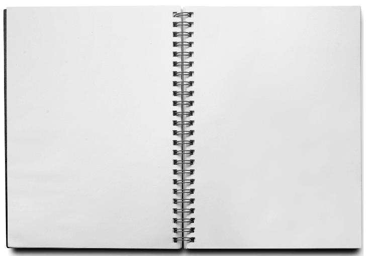
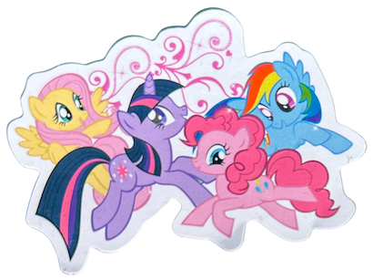
My Little Pony: Friendship is Magic was one of my favorite shows to watch during my childhood. I occasionally still watch it.
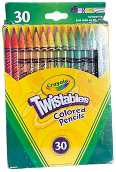
I remember being obsessed with using these to color as a little kid. It was so much fun to twist them in and out.
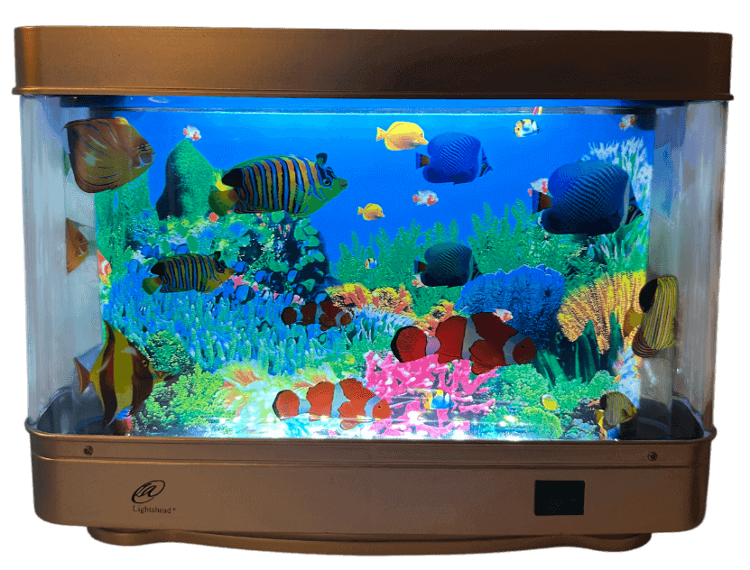
My fake aquarium lamp that would light up and mesmerize me for hours. It was the perfect night light.
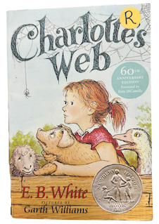
Charlotte's Web was the first book that ever made me cry, I wasn't ready for that ending at all.
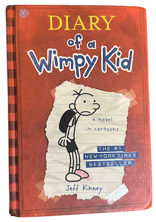
The Diary of a Wimpy Kid series was such an iconic part of anyone's childhood. They were so fun to read, I loved them. Always had to beg my parents to buy me every new book.
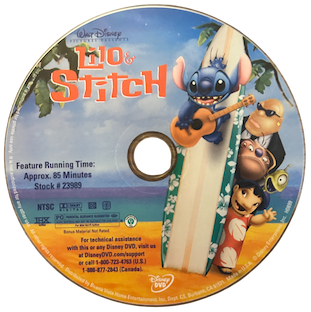
I absolutely adored Lilo & Stitch. This is where my Stitch obsession started, one of my favorite Disney characters.
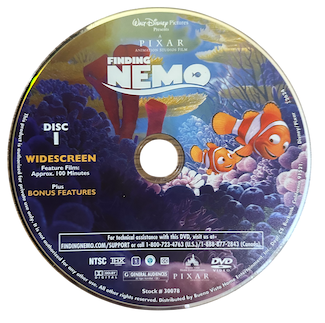
Finding Nemo made the ocean feel magical. However, I do remember being so stressed watching the movie wondering if Marlin would finally find Nemo. Dory was the best, I loved her "just keep swimming" saying.
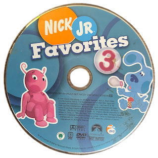
Nick Jr. was on in my house every single day, a key part of my childhood. Some of my favorite shows were Max & Ruby, Wonder Pets, The Backyardigans, Yo Gabba Gabba!, and Dora the Explorer.
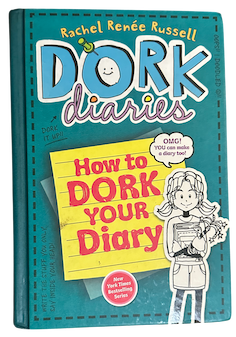
Dork Diaries was my other obsession alongside Diary of a Wimpy Kid, such a good series with fun illustrations. I remember being so invested into reading the books.
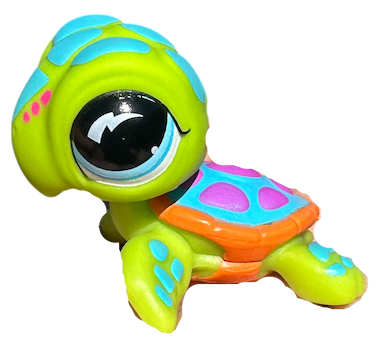
I had a whole collection of Littlest Pet Shop figures and this turtle was one of my absolute favorites. I collected them because I was a big fan of the show but it was also just a lot of fun.
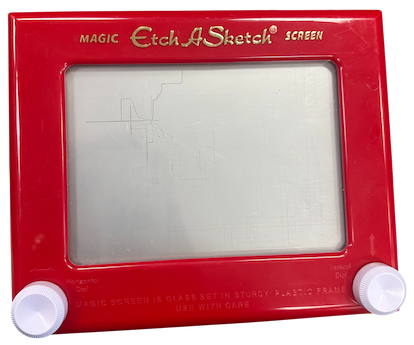
I could spend an entire afternoon on my Etch A Sketch, always trying and failing to draw anything.
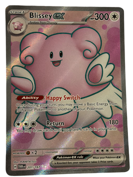
I collected Pokemon cards mainly for how they looked, I never really learned how to play the actual game. I loved seeing which Pokemon I would get next. Probably was the start of my obsession with blind boxes.
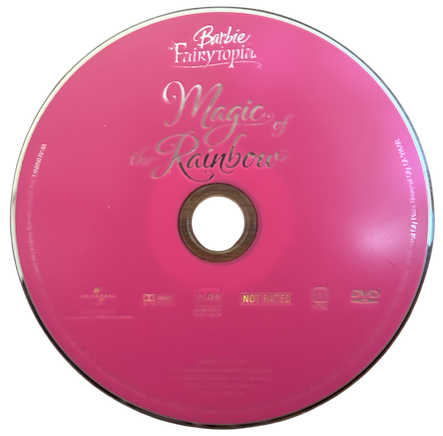
The Barbie movies were probably the best movies I remember watching as a kid. They provided me with a kind of warmth and comfort feeling. Barbie Fairytopia was one of them, it was so good and made me believe fairies could be real.
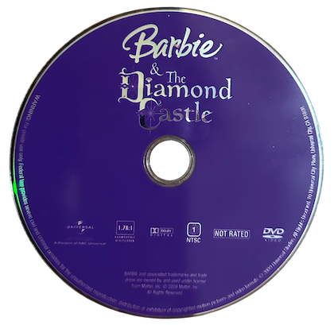
Barbie and the Diamond Castle had the best songs, I sang along every single time. I really wanted their heart necklaces. Barbies movies were just on another level. I am not ashamed to admit I still watch them today, and will continue doing so.
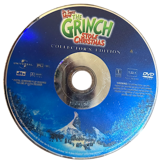
The Grinch was a must-watch holiday movie in my house, one of the best Christmas movies. It is not really Christmas until you watch it.
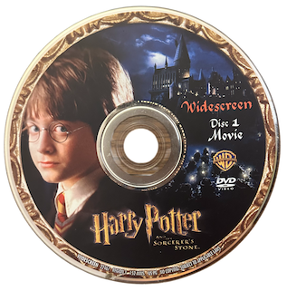
Watching the Harry Potter movies for the first time was life changing. I am obsessed with this series, nothing can comfort me like Harry Potter does. I remember wanting to attend Hogwarts so bad, and am still to this day waiting for my letter!